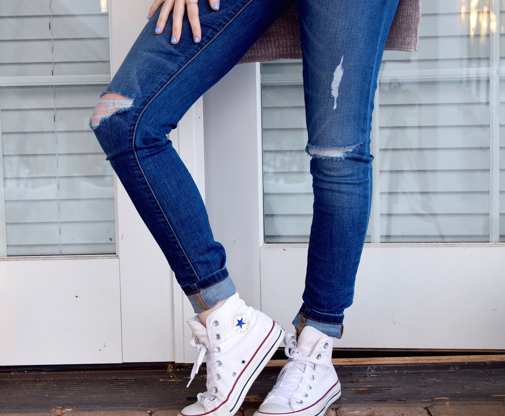
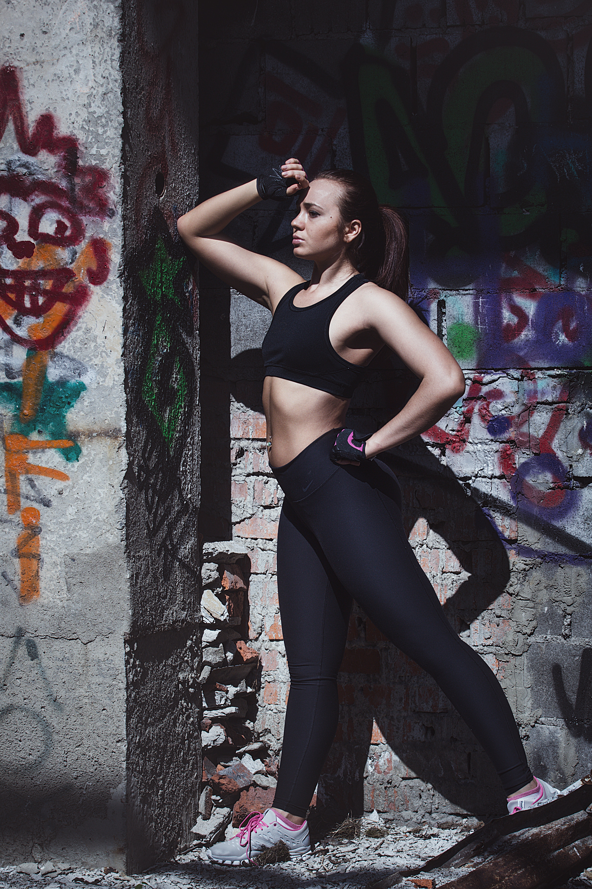
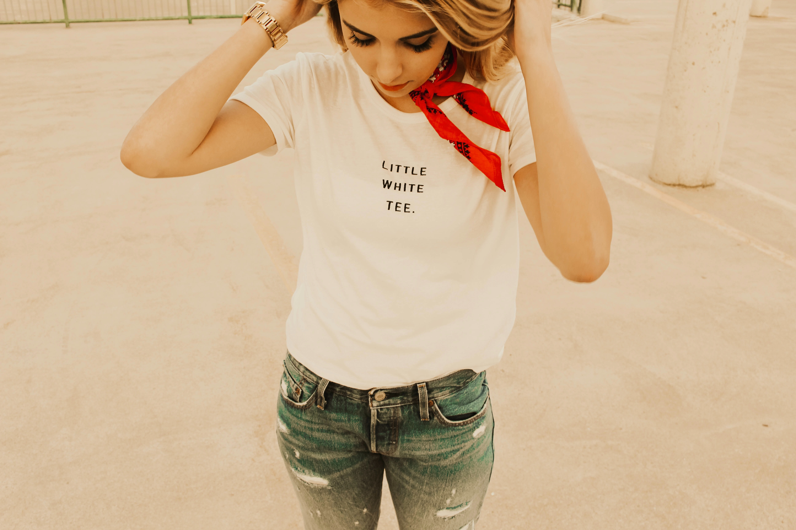
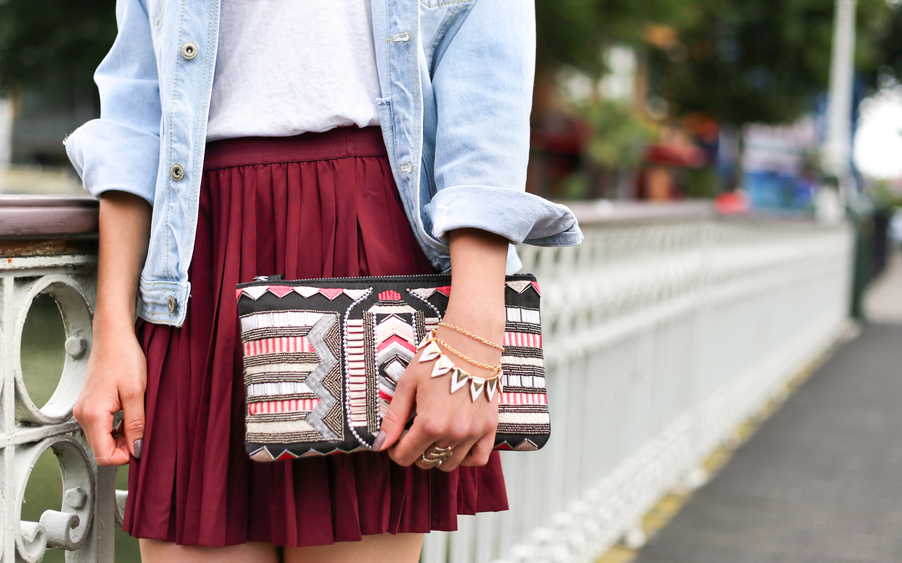
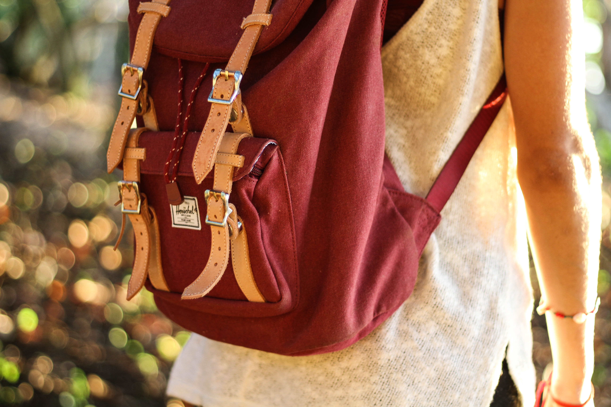

Menu
Fashion For WazzU
Home
Our Mission
Girls: Essentials/Tips
Guys: Essentials/Tips
Video
Connect with us
Menu
Girls: Essentials and Tips

Essential 1. A good pair of jeans. [click for more]
Essential 2. Denim Shorts. [click for more]

Essential 3. Leggings. [click for more]

Essential 4. Basic Tops. [click for more]
Essential 5. Professional Outfit. [click for more]
Essential 6. Sweatshirts. [click for more]
Essential 7. Crop Tops. [click for more]
Essential 8. Day-to-Night Item. [click for more]
Essential 9. Cardigans and Sweaters. [click for more]
Essential 10. Scarves. [click for more]
Essential 11. Hats. [click for more]

Essential 12. Mini Skirts. [click for more]
Essential 13. Jacket for Going Out. [click for more]
Essential 14. Flannel and Chambray Shirts. [click for more]
Essential 15. Boots. [click for more]
Essential 16. Tights. [click for more]
Essential 17. Spandex. [click for more]
Essential 18. Little Black Dress and Cute Dresses. [click for more]
Essential 19. High Heels. [click for more]

Essential 20. Backpack or Cross-body Bag. [click for more]


{kind=link}
{kind=link}
{kind=link}
{kind=link}
{kind=link}
{kind=link}
{kind=link}
{kind=link}
{kind=link}
{kind=link}
{kind=link}
{kind=link}
{kind=link}
{kind=link}
{kind=link}
{kind=link}
{kind=link}